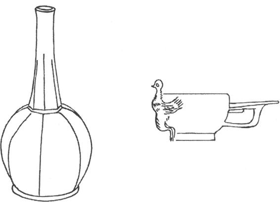

隋唐是中国封建社会强大兴盛的时代。这时期，陶瓷工艺获得了全面的发展，在南北各地都形成了以州命名的瓷窑体系；烧瓷新工艺的采用，创造出更多的新产品来，使得陶瓷手工业呈现出五彩缤纷的兴旺景象。文人的著述、诗人的讴歌，更为这时期的名瓷及其制作技艺增添了光彩。隋唐的陶瓷也同中国的丝绸等名贵物产一起，为中外经济、文化交流发挥了积极作用，并且传播到世界许多国家和地区，产生了深远的影响。
隋唐五代的陶瓷生产所以能取得这样大的成就，因素是多方面的，归纳起来有以下几个重要方面：
第一，陶瓷手工业发展到公元6世纪，烧制工艺已经有相当雄厚的技术基础。
第二，隋唐统治者建立了统一的封建帝国，南北经济汇集起互相交流，互相促進，封建地主经济得到繁荣发展，这些有利于手工业者安心从事自己的专业生产，陶瓷工艺技术自然能得到提高。
第三，隋唐的商业和城市经济远远超过前代。瓷器投入市场竞争中，推动了瓷器手工业的发展。手工业生产关系的变化也有利于私营手工业的发展。南北朝时期开始出现的“和雇”（封建雇佣工匠）、“和市”（劳力和商品交换市场）、“纳资代役”（以纳贡资金代替徭役）制度，到唐朝特别是唐玄宗时期，得到比较广泛地推行，对蓬勃兴起的瓷窑作坊的开办是有利的。
第四，隋唐时期丝绸之路空前活跃，南海海路不断开拓，中国和亚洲邻国，以及阿拉伯和非洲东海岸进行了密切的经济、文化交流，波斯、阿拉伯一带出色的生活用具、装饰艺术也随之传入中国。中国传统陶瓷受到外来文化的影响，吸收了其中的有益内容，又展现了新的面貌。
第五，唐朝的饮酒、品茶风气十分兴盛，当时许多著名的诗句，如“会须一饮三百杯”、“举杯邀明月”等对此都有反映。这种风气使得人们对瓷制的酒具、茶具需求量大增，同时对其工艺质量也更为讲究。
隋朝继承了前代的传统，仍以生产青瓷为主，同时白瓷的产量和制作技艺也有提高。
唐朝的瓷器生产有所谓“南青北白”之说，即南方主要生产青釉瓷器，而北方主要生产白釉瓷器。此外，唐代还创造出釉下彩绘瓷、青花瓷、唐三彩等陶瓷制品。唐代的陶瓷生产取得了丰硕的成果，为中国的传统文化增添了光辉。在二百多年的时间里其发展有一定的规律。（图25—10）
图25-10 唐代瓷器典型器物发展示意图
唐代的青釉瓷以越窑生产的质量最高，在全国名居榜首。越窑的中心窑场在浙江慈溪县上林湖滨海地区。此外浙江东北部的余姚、上虞、宁波、鄞县、绍兴、临海、黄岩、象山等地也都属于越窑系统，以生产青瓷为主。
越窑青瓷产品种类丰富，有碗、盘、碟、壶、瓶、罐、水盂、唾盂、钵、匙、灯、印盒、粉盒、墓志等。其胎体灰色，釉色青黄、青绿，晶莹润泽。唐人陆羽在《茶经》中将越窑列为唐朝诸窑之首，说明越窑工艺水平确实高超，影响广泛。唐朝著名诗人如皮日休、陆龟蒙、孟郊、卢仝、郑谷、徐寅、韩偓等都曾写诗吟诵越窑瓷器，许多诗句脍炙人口，成了千古绝唱。如陆龟蒙诗云：“九秋风露越窑开，夺得千峰翠色来。好向中宵盛沉瀣，共嵇中散斗遗杯。”徐寅在《贡余秘色茶盏诗》中写道：“捩翠融青瑞色新，陶成先得贡吾君，巧剜明月染春水，轻旋薄冰盛绿云。古镜破苔当席上，嫩荷涵露别江濆。”“巧剜明月”、“千峰翠色”、“嫩荷涵露”等诗句把越窑青瓷的造型、质地、釉色淋漓尽致地描绘了出来。
五代浙江割据者吴越国王钱镠家族，将越窑青瓷生产中技术较高的作坊，指定为专门生产给皇室的贡品和统治集团生活用品的工场，并利用这些瓷器做政治交易，向周围其他实力强大的集团，包括赵匡胤的宋朝政权大量进贡，以换取苟安一时，不受攻击。这类器物一般庶民是不准使用的，所以史书称之为“秘色”瓷。对于这种“秘色”瓷器，过去只见于文献记载。1987年考古工作者对陕西法门寺舍利真身宝塔地宫进行发掘时，发现了十余件唐朝青瓷器，同时还出土一方造物账碑，碑文中即称之为“秘色”瓷。这次发掘使得流芳千年的唐朝秘色瓷实物第一次展现在我们面前。它们釉色淡青，光泽晶莹，果然名不虚传。
越窑青瓷不但质量好，而且有漂亮的装饰。例如用线刻技艺熟练地刻出小花、流云、莲荷、菊花、飞蝶、小鸟、云龙、仙山乃至关于竹林七贤、嵇阮高士的人物故事。有的制品还用金彩修饰，在口沿用金边包裹，即所谓“金釦瓷器”、“金银饰陶器”、“金棱秘色瓷”等。（图25—11）

图25-11 越窑青瓷典型器物
在浙江，生产青瓷的除了越窑以外，还有婺州窑系统。其中心窑址在金华，周围兰溪、义乌、东阳、永康、武义等地也有发现。婺州窑生产的青瓷与越窑有许多相似之处，但质地比较粗糙，胎色较深，呈深灰或紫色。婺州窑青瓷的釉层加厚，玻璃质增强，并且釉中呈现星星点点的乳白色，这使它独具特色。不过这种乳白色的星点至晚唐、五代以后便消失了。
在浙江东南部的温州、永嘉、瑞安等地还有瓯窑系统。瓯窑受越窑工艺影响，也生产青瓷。其生产品种、器物造型等都与越窑相似。但是瓯窑瓷器的胎色灰白，胎体更薄，釉层也比较薄，釉色为淡青，温润如玉。晚唐时，瓯窑的质量进一步提高，胎釉结合紧密，很少有剥釉现象。从整体上看，瓯窑工艺技术比婺窑水平要高。
在长江中游的洞庭湖地区，生产青瓷的代表是岳州窑。其窑址分布在湖南湘阴等地。由于产量大，陆羽在《茶经》中把它同越窑一起称赞：“越州瓷、岳州瓷皆青，青则益茶。”
岳州窑历史悠久，在长江中游最早出现青瓷手工业，东汉到三国已经有早期青瓷出现。在南朝时就生产一般日用青瓷，产量大，主要有碗、盘、杯等，质量较差。到了唐代，岳州窑的生产工艺有较大提高。其胎色灰白，胎质较薄，但不如越窑的致密；釉色有青、酱绿、酱黄等多种；其釉玻璃质强，但多开细碎冰片，容易剥落。岳州窑是在中国诸瓷窑中，最早使用匣钵的窑場之一，这对于提高瓷器的烧造工艺水平具有重要意义。匣钵是一种耐火的容器，瓷器生坯装入其中，烧制时可避免火焰直接作用和烟尘玷污。岳州窑在唐代已经大量使用了匣钵。
白瓷最早发明于北朝，当时的瓷窑只发现了河北邢窑一处。以后经过数十年的考古调查，发现至隋唐时，除邢窑外，在河南、山西、陕西、安徽、江西等地都发现有生产白瓷的窑址。从考古发掘看到，初唐墓中所出白瓷，釉色尚多泛青；盛唐以后的白瓷，釉色变为纯正。
唐代白瓷的生产，仍以河北的邢窑为代表。胎质细洁，釉色白润，品种丰富。当时邢窑既生产质量高的精细白瓷，也生产质量较粗糙的白瓷，因而能够满足社会各阶层的需要。所以唐代学者李肇在《国史补》中提到邢窑的白瓷时说：“天下无贵贱，通用之。”白瓷便于适应买主的需要，可以在上面刻写各种字句。例如西安一唐朝贵族墓中出土的白瓷罐、碗、盒、碟等上面就刻写有“盈”、“翰林”等字样。还有的白瓷上面刻写有类似商标、广告式的字句。故宫博物院珍藏着一件唐朝白瓷花口瓶，上面刻写着“丁大刚作瓶大好”，以招徕买主。刻“盈”字款白瓷的发现说明白瓷已进入宫廷，因为唐朝皇宫里有专门珍藏皇帝珍宝的库房就叫“大盈库”，在大明宫考古发掘中就出现有带“盈”“翰林”字款的邢窑的瓷碗。
唐朝的白瓷从造型到装饰，还广泛吸收了外域工艺的风格特点。例如学习波斯金银器的造型，制出牛头形杯、虎头形杯；学习波斯器皿、织锦上的纹样，在白瓷上刻画、模印出忍冬、宝石、人物舞蹈、葡萄图案等。这样的商品在中国市场上显得很新颖，同时也适应国外的需要，有利于外销。
长沙窑属青瓷系统，中心窑址在湖南长沙市的望城县铜官镇，附近的瓦渣坪、石堵湖、廖家坡一带也有窑址发现，因地属长沙，所以史称长沙窑。
长沙窑工匠们努力在工艺上寻求创新，烧制出釉下彩绘瓷，使自己独树一帜，享誉于世。
长沙窑青瓷釉下彩绘瓷，发展于唐代中、后期，其特点是：先在瓷坯上施以彩绘，然后涂釉烧制，烧成后彩绘不再褪色，而且给人一种含蓄温润的感觉。突破了唐代青瓷或白瓷的单一色调，而且为多彩绘画技法运用到制瓷工艺上开了先河。
长沙窑的釉下施彩，有时是用褐绿彩直接绘画，有时是先在瓷胎上刻划花纹轮廓，然后再沿刻线填绘褐绿彩。彩绘的内容很丰富，有点绘联珠、莲荷、块斑图案，有花鸟、动物、人物图画，还有热带植物、宝塔、题诗、警语等，甚至还有瓷器的价格。例如有的瓷器上绘写了这样的诗句：“千里人归去，心画一杯中，莫虑前途远，开航逐便风”，表达了家人对远行游子的深切思念，耐人寻味。又如一件瓷壶上绘写着“富从升合起，贫从不计来。五文”。把提倡勤俭持家的警句同壶的价钱写在一起，表现出制作者的巧妙构思。这些丰富的彩绘内容对于研究唐代民间文学、艺术、风俗等，有很高的价值。釉下彩绘瓷把中国传统的诗词、绘画、书法及制瓷技艺融为一体，提高了中国瓷器的欣赏价值，也为中国瓷器的进一步发展开拓了广阔的道路。
长沙窑瓷器种类之多，在唐朝是少见的。一些普通的生活用具，虽然造型基本一致，但对口、腹、系、流等部位进行灵巧变化，便造出许多样式新颖的器物来。例如1974年在浙江宁波唐代码头遗址出土了数以百计的越窑青瓷和长沙窑瓷器。其中长沙窑瓷壶的款式就有17种之多。从壶的口沿来看，有喇叭口、直口、洗形（似浅盆形）口等多种；腹部结构则有瘦长形、圆鼓形、瓜体形、扁圆形、橄榄形、葫芦形、袋形等；流有直管形、细长而弯曲形、六方形等。随着壶体的改变，壶柄等附件安排也有变化，如颈短的安短小柄，细长颈就安长柄。
长沙窑瓷器还有许多玩具、摆设等小品，如狮子、大象、乌龟、小鸟各种人物等。这些瓷塑小品朴实简洁，虽不重形似，但优美传神。（图25—12）
图25-12 长沙铜官窑各类瓷器（采自周世荣《石渚长沙窑的瓷器及其有关问题的研究》，载文物编辑委员会《中国古代窑址调查发掘报告集》）1-5．各种瓷壶6．狮7．象8．龟9．鸟10．人物雕像
长沙窑瓷以自己的独特风采同越窑、邢窑瓷一起投入了海外贸易，所以在中国沿海港口城市和出海海道上时有发现。瓷器有许多表现外域文化风情的内容，如胡人乐舞图、狮子图、椰枣风光、对鸟图、联珠图案等西亚、北非风格的画面。在国外，如朝鲜、日本、伊朗、印度尼西亚、斯里兰卡、伊拉克乃至北非的埃及等国古代遗址中，也都有长沙窑瓷器发现。它们确实不愧是中外文化交流的出色使者。
邛窑 四川省邛崃县的卭窑，烧瓷历史悠久，在唐朝发展起釉下彩绘瓷、白瓷、绿釉瓷、酱釉瓷、三彩釉陶等品种。其中釉下彩绘瓷也是高温烧成，艺术风格和表现手法和长沙窑一致，只是胎体较粗，釉色偏暗，没有长沙窑那明丽。可能由于交通关系，在海外没有见到邛窑的东西。
唐朝以河南巩县为中心窑场的工匠们，在白瓷发展的基础上，吸取釉下彩绘工艺，创造出青花瓷器。青花瓷是以钴蓝为颜料，在胎坯上绘花纹，然后涂上一层透明釉，在1200°C高温下一次烧成。唐朝青花瓷胎质较粗松，白度不高；釉质不细，白中泛黄；胎釉之间有一层明显的化妆土。由于钴料含铁，所以青花色泽浓艳，蓝中透紫。现今在中国发现的唐朝青花瓷总共只有12块碎片。根据它们判断，其完整器形有盘、碗、壶、枕等日用器具，并且盘、碗的口缘多作花瓣状，枕为小方形。装饰花纹有中国传统的花卉，也有西亚异国情调的图案。近几年考古工作者在巩县的黄冶窑等处展开大规格考古发掘，出土许多三彩釉作品，也出土相当数量的青花瓷器。这些窑址出土品有烧得很精致完美的，有没有烧熟的生烧器物与扬州唐城遗址，安徽京杭大运河遗址出土的青花瓷品质一样。青花瓷器在唐朝以后不断提高工艺制作水平，特别经过元代的发展，到了明清时期成为瓷器生产的主流，最富于民族工艺特色。
享誉中外的“唐三彩”是一种多色釉的陶器。它在唐初即已产生；盛唐时，其工艺水平及生产数量都达到高峰；唐朝后期随着北方战乱的破坏，它的生产衰落下去。唐三彩主要产于以河南巩县为中心的中原地区，陕西的铜川黄堡窑、咸阳窑、河北邢窑、四川邛窑也生产。南方生产三彩的地方是四川的邛窑。主要是供大小官僚作明器陪葬用，所以多出于墓葬。根据国内外考古发掘的资料，唐三彩的许多用具可以在生活中使用。
唐三彩以高岭土、黏土或北方坩土作坯体，经手工捏塑或模制成形，令其阴干，然后入窑以1000°C高温素烧，烧成、冷却后再施以釉彩，再次入窑烧至900°C即成。唐三彩的釉质以硅酸铝为主，还要加入炼铅的熔渣和铅灰做助熔剂。在釉中加入不同的呈色金属氧化物，便可以调出各种颜色，例如加入氧化铜可成绿色，加入氧化铁便成黄褐色或黑色，加入氧化钴即成蓝色，通过调配还可以制出不同程度的深浅颜色和复合色。所以所谓唐三彩，不能理解为只是三种颜色，是多彩的意思，实际上可多可少。其釉色斑斓绚丽、光泽明亮，十分漂亮。
唐三彩由于烧成温度低，胎质松脆，而且容易渗水，因此在日常生活中的实用价值远不如瓷器优越。
唐三彩的种类繁多，从日用器具到房屋、仓库等建筑物，从各种天神、人物、动物形象到牛车、井栏、兵器等等，几乎应有尽有，当然都是模型，没有实用价值，不过却可以反映出唐朝丰富多彩的社会现实。
唐三彩，表现了充分的写实性特点，而人物、动物造型不仅各部位的比例准确，线条流畅优美，而且有着强烈的表现力。例如塑造的马有作奋蹄昂首嘶鸣状，有作俯首理身状，十分动人前腿提起，后腿蹲屈作舞蹈状；对于武士则以夸张其肌肉发达、怒目圆睁，来表现刚毅勇猛的精神。唐三彩以其高超的工艺技巧，使它成为唐代陶瓷中的珍品。唐朝灭亡后，虽然还有所谓辽三彩、金三彩，但工艺水平再也无法同唐三彩相比。（彩图8）